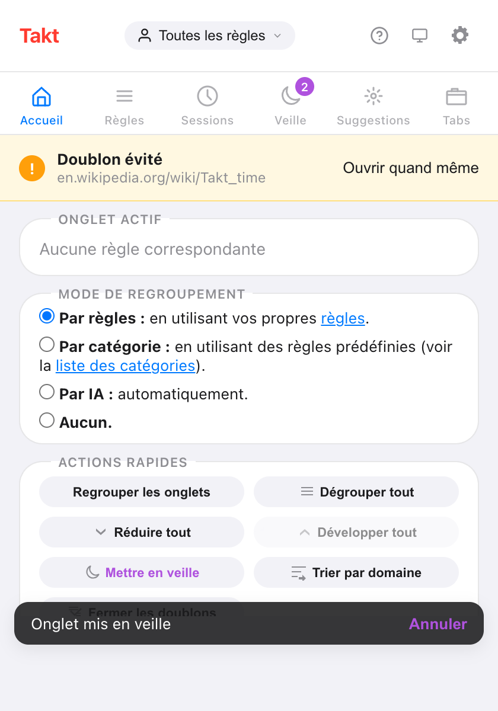

En bref : ouvrez le popup de Takt, choisissez Par catégorie ou Par IA sous Mode de regroupement, et Takt regroupe aussitôt vos onglets.
- Catégorie : 20 catégories fixes comme Development, Social et News. Les sites inconnus vont dans « Other ».
- IA : le modèle intégré à Chrome nomme les groupes. Il s'exécute sur votre appareil.
- Les deux sont gratuits, jusqu'à 5 groupes toutes fenêtres confondues. Premium supprime la limite.
Quels modes de regroupement propose Takt ?
Quatre, et un seul est actif à la fois. Vous le choisissez dans le popup, sous Mode de regroupement.
| Mode | Comment les onglets sont regroupés | Configuration |
|---|---|---|
| Par règles (par défaut) | Selon les règles d'URL que vous écrivez | Une règle par groupe |
| Par catégorie | Par site, dans 20 catégories intégrées | Aucune |
| Par IA | Par sujet, avec des noms fournis par le modèle local de Chrome | Aucune |
| Aucun | Takt ne regroupe pas les onglets | Aucune |
Quand vous changez de mode, Takt dégroupe vos onglets puis les regroupe selon le nouveau mode. Votre choix est enregistré. Choisir Aucun dégroupe tout et arrête le regroupement.

Comment fonctionne le regroupement par catégorie ?
Takt ne regarde que le nom d'hôte de chaque onglet. Il consulte une liste intégrée de 77 sites connus, chacun associé à l'une des 20 catégories :
Development, AI Tools, Docs, Productivity, Communication, Finance, Design, Shopping, Social, Entertainment, News, Gaming, Sports, Travel, Health, Food, Science, Career, Education et Cloud.
- Les sous-domaines héritent. docs.github.com ne figure pas dans la liste : Takt essaie donc github.com et le range dans Development.
- L'hôte le plus précis l'emporte. aws.amazon.com va dans Cloud. amazon.com va dans Shopping.
- Tout le reste va dans Other. Cela inclut l'intranet de votre entreprise, les pages Nouvel onglet et tout site que la liste ne connaît pas. Other est toujours le dernier groupe.
La catégorie la plus fournie devient le premier groupe, puis la suivante, et ainsi de suite. Les nouveaux onglets rejoignent le groupe de leur catégorie pendant leur chargement. Dans ce mode, Takt ne lit aucun contenu de page.
Comment fonctionne le regroupement par IA ?
Takt envoie le titre de chaque onglet et jusqu'à 500 caractères du texte de sa page à la Prompt API intégrée à Chrome. Le modèle s'exécute dans Chrome, sur votre machine. Il renvoie un nom court par sujet, et Takt construit les groupes.
- Un groupe compte au moins 2 onglets. Un onglet sans correspondance reste hors groupe.
- Chaque exécution porte sur 100 onglets au maximum.
- Les noms viennent du modèle : ils peuvent changer d'une exécution à l'autre.
- Lire le texte des pages nécessite la permission facultative « Accès à tous les sites web » de Takt. Sans elle, Takt regroupe d'après les titres seulement et l'indique dans le popup.
Le modèle ne s'exécute pas à chaque nouvel onglet. En mode IA, les onglets ouverts ensuite attendent le prochain clic sur Regrouper les onglets ou Alt+Shift+G.
Que se passe-t-il la première fois que j'utilise le mode IA ?
Chrome devra peut-être d'abord télécharger son modèle local. Takt lance le téléchargement quand vous cliquez sur Regrouper les onglets et affiche la progression dans le popup : « Préparation du modèle IA… », puis « Téléchargement du modèle IA (N%)… », puis « Modèle IA prêt. Regroupement des onglets… ». Le regroupement se poursuit tout seul quand le modèle est prêt.
Et si mon ordinateur ne peut pas exécuter le modèle d'IA de Chrome ?
Takt regroupe quand même vos onglets. Il se rabat sur une méthode par similarité qui regroupe les onglets partageant des mots dans leur titre et leur nom de site, et le popup affiche « IA indisponible sur cet appareil. »
La même solution de repli s'applique si le modèle met trop de temps : 2 minutes pour se charger, ou 8 secondes pour répondre. Elle gère aussi les nouveaux onglets en mode IA : un nouvel onglet rejoint le groupe existant le plus proche, et n'en crée jamais de nouveau.
Qu'est-ce que la limite gratuite de 5 groupes ?
Avec le plan Free, les modes Catégorie et IA créent au plus 5 groupes d'onglets. La limite compte tous les groupes d'onglets ouverts dans Chrome, toutes fenêtres confondues, y compris ceux que vous avez créés à la main.
- Si une exécution dépasse la limite, Takt garde les groupes les plus gros et laisse le reste hors groupe.
- Si vous avez déjà 5 groupes, le popup affiche « You've hit the 5-group limit. Ungroup some tabs to create more. »
- Le mode Par règles a sa propre limite gratuite, de 5 règles.
Premium (3 $/mois ou 30 $/an) supprime la limite de groupes.
Chrome ne le fait-il pas déjà ?
Non. L'organisateur d'onglets par IA de Chrome, qui fonctionnait dans le cloud et n'était disponible qu'aux États-Unis, a été retiré en 2025. La version actuelle de Chrome ne regroupe pas les onglets à votre place. Vous pouvez créer, enregistrer et synchroniser des groupes à la main, mais y ranger les onglets reste à votre charge.
Le mode IA de Takt utilise la Prompt API de Chrome, qui s'exécute sur votre appareil : les titres des onglets restent sur votre ordinateur. Le mode Catégorie n'a besoin d'aucun modèle.
| Chrome sans extension | Takt Catégorie | Takt IA | |
|---|---|---|---|
| Quand le regroupement a lieu | Seulement à la main | Avec Regrouper les onglets, et pour chaque nouvel onglet pendant son chargement | Avec Regrouper les onglets |
| Noms des groupes | Vous les saisissez | Fixes : 20 catégories + Other | Suggérés par le modèle |
| Exécution sur l'appareil | Pas de regroupement par IA | Oui, sans modèle | Oui |
| Passer à vos propres règles | Non | Oui, en un clic vers le mode Par règles | |
| Prix | Gratuit | Gratuit jusqu'à 5 groupes ; illimité avec Premium | |
Les limites des modes Catégorie et IA
- La liste des catégories est fixe. Impossible d'ajouter un site ou de renommer une catégorie. Si vous renommez un groupe dans Chrome, Takt reprend le nom intégré à l'exécution suivante.
- Les couleurs se répètent. 20 catégories se partagent les 8 couleurs de groupe de Chrome. C'est le nom qui identifie un groupe.
- Les noms donnés par l'IA varient. Lancez-la deux fois et vous obtiendrez peut-être des noms différents.
- Les profils et les planifications ne s'appliquent pas. Ils ne fonctionnent qu'en mode Par règles.
Si vous voulez github.com dans un groupe appelé « Code » à chaque fois, écrivez une règle. Vous ne savez pas quelles règles écrire ? Laissez Takt vous les suggérer.
Choisissez un mode. 30 onglets en vrac deviennent cinq groupes nommés.
Ajouter Takt à Chrome, gratuitementQuestions fréquentes
Le regroupement par catégorie ou par IA est-il gratuit ?
Oui. Les deux sont gratuits, jusqu'à 5 groupes d'onglets au total toutes fenêtres confondues, en comptant les groupes créés à la main. Premium (3 $/mois ou 30 $/an) supprime la limite.
Le regroupement par IA de Takt envoie-t-il mes onglets à un serveur ?
Non. Il utilise la Prompt API intégrée à Chrome, qui s'exécute sur votre appareil. Voir comment Takt garde vos données en local.
Que se passe-t-il si le modèle d'IA de Chrome n'est pas disponible sur mon ordinateur ?
Takt regroupe alors les onglets qui partagent des mots dans leur titre et leur nom de site, et vous indique que l'IA est indisponible sur cet appareil.
Puis-je ajouter mes propres sites à une catégorie ?
Non. La liste est fixe et les sites inconnus vont dans Other. Utilisez le mode Par règles pour envoyer un site dans un groupe que vous nommez.